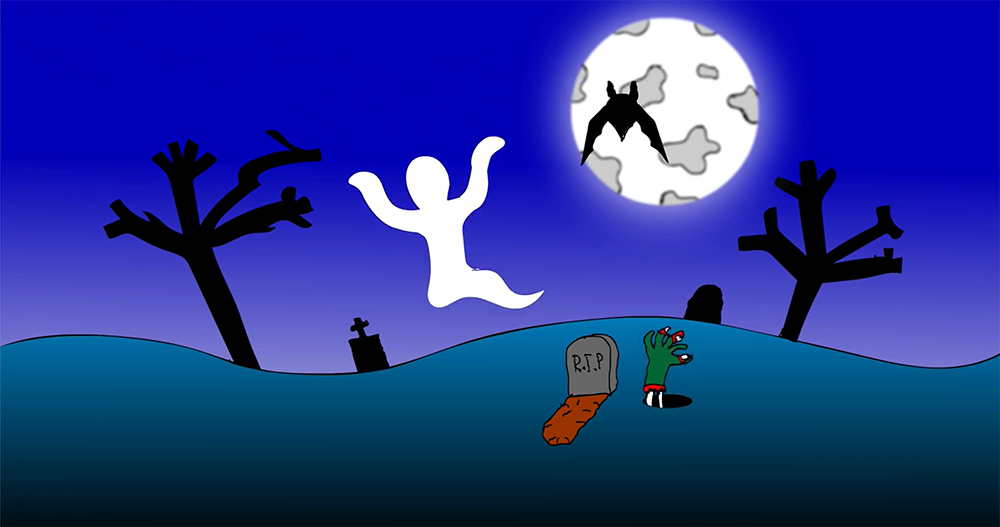
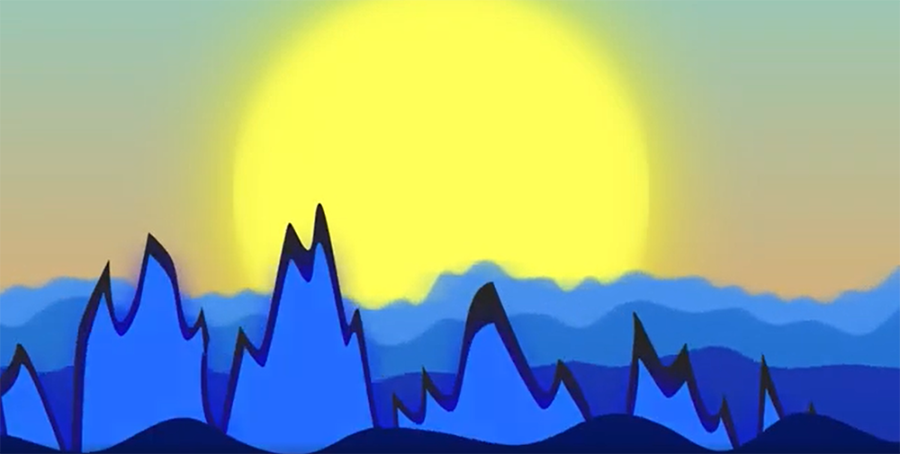
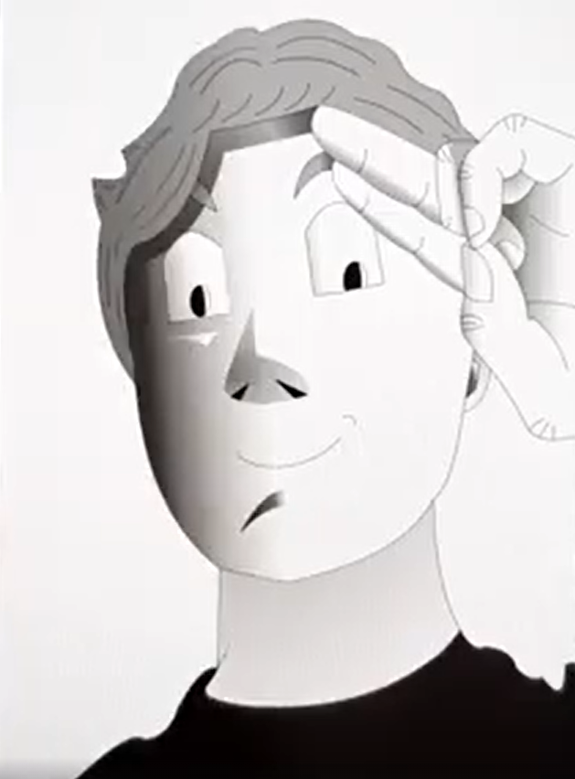

My TV/Film Inspired Works
(Numbers for each section ties into the numbered list on the other page (i.e. 1 = 1, 2 =2, etc.))
1. Hybrid Dragon #1

- Hybrid of 2 dragon species from the "Wings of Fire" series
- Based off of my first film inspiration of "How To Train Your Dragon" (HTTYD)
- Reflects my interest in dragons, and the world of fantasy in general thanks to HTTYD
2. Halloween Animation

Link To "Halloween Animation"
- Related to the Halloween/ghost theme in "Ghostbusters"
- I was born in the same month as Halloween, so it's one of my favorite holidays and I wanted to do something for it
- This was the first time I had touched digital tools to make art, and it was a fun experience to make this
3. Monster Of The Deep

Link To "Monster Of The Deep"
- This was one of my first times using Adobe After Effects
- I wanted to experiment with glow, color change, variations of movement, and more
- The idea of making an short video about Godzilla appearing, then diving under the waves, seemed to fit best
4. A Tribute To Toriyama

Link To "A Tribute To Toriyama"
- I hadn't drawn anything digital in a while, so I wanted to see how much I'd improved
- This was during the time of Akira Toriyama's passing, so I wanted to make something that pays homage to him
- I like "Dragon Ball", so I decided to do a self-portrait in his art style